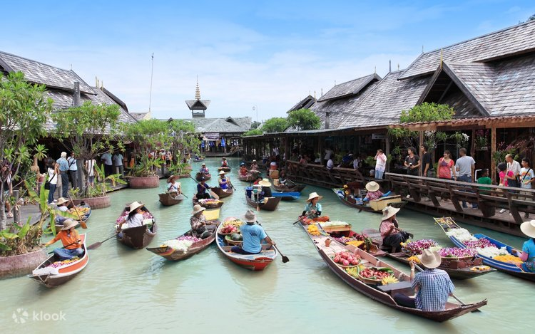
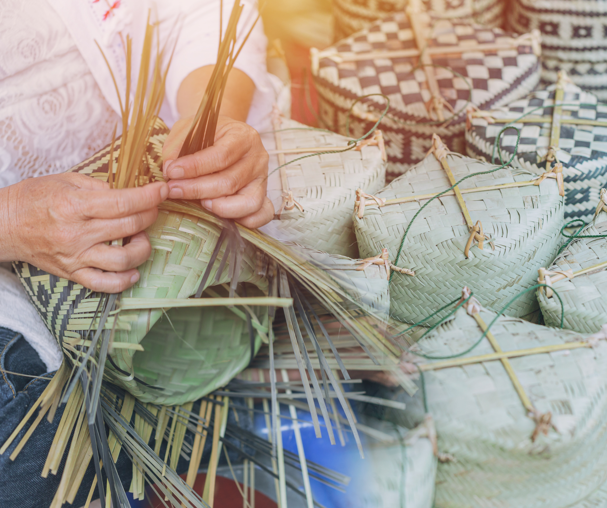

วัดโสธรวรารามวรวิหาร
ที่ประดิษฐานหลวงพ่อโสธร พระพุทธรูปศักดิ์สิทธิ์ที่ผู้คนทั่วประเทศ เดินทางมากราบไหว้ขอพร เป็นจุดหมายแรกที่ไม่ควรพลาดเมื่อมาเยือนฉะเชิงเทรา
อ่านเรื่องราวเต็มเมืองที่คลองแปดสายเคยไหลผ่านกลางใจเมือง วันนี้ยังคงมีวัดศักดิ์สิทธิ์ สวนผลไม้ริมบางปะกง และตลาดเก่าที่รอให้คุณมาเยือน

สี่ตัวเลือกที่พาคุณไปรู้จักฉะเชิงเทราในแบบที่ต่างกัน
 01
01
วัดโสธรและวัดสำคัญอีก 5 แห่งที่เป็นศูนย์รวมศรัทธาของชาวแปดริ้ว
ดูวัดทั้งหมด → ภาพธรรมชาติ
02
ภาพธรรมชาติ
02
แม่น้ำบางปะกง สวนสาธารณะ และฟาร์มเกษตรริมน้ำ
ดูทั้งหมด →
ภาพตลาด 03ตลาดเก่าริมคลองสามแห่งที่ยังคงกลิ่นอายวิถีชีวิตดั้งเดิม
ดูทั้งหมด →
ภาพสินค้า 04ของกิน ของฝาก และผ้าทอฝีมือคนแปดริ้ว สั่งกลับบ้านได้
เลือกซื้อสินค้า →
ที่ประดิษฐานหลวงพ่อโสธร พระพุทธรูปศักดิ์สิทธิ์ที่ผู้คนทั่วประเทศ เดินทางมากราบไหว้ขอพร เป็นจุดหมายแรกที่ไม่ควรพลาดเมื่อมาเยือนฉะเชิงเทรา
อ่านเรื่องราวเต็ม